Thyristors are a class of semiconductor components exhibiting hysteresis, that property whereby a system fails to return to its original state after some cause of state change has been removed. A very simple example of hysteresis is the mechanical action of a toggle switch: when the lever is pushed, it flips to one of two extreme states (positions) and will remain there even after the source of motion is removed (after you remove your hand from the switch lever). To illustrate the absence of hysteresis, consider the action of a "momentary" pushbutton switch, which returns to its original state after the button is no longer pressed: when the stimulus is removed (your hand), the system (switch) immediately and fully returns to its prior state with no "latching" behavior.
Bipolar, junction field-effect, and insulated gate field-effect transistors are all non-hysteric devices. That is, these do not inherently "latch" into a state after being stimulated by a voltage or current signal. For any given input signal at any given time, a transistor will exhibit a predictable output response as defined by its characteristic curve. Thyristors, on the other hand, are semiconductor devices that tend to stay "on" once turned on, and tend to stay "off" once turned off. A momentary event is able to flip these devices into either their on or off states where these will remain that way on their own, even after the cause of the state change is taken away. As such, these are useful only as on/off switching devices -- much like a toggle switch -- and cannot be used as analog signal amplifiers.
Thyristors are constructed using the same technology as bipolar junction transistors, and in fact may be analyzed as circuits comprised of transistor pairs. How then, can a hysteric device (a thyristor) be made from non-hysteric devices (transistors)? The answer to this question is positive feedback, also known as regenerative feedback. As you should recall, feedback is the condition where a percentage of the output signal is "fed back" to the input of an amplifying device. Negative, or degenerative, feedback results in a diminishing of voltage gain with increases in stability, linearity, and bandwidth. Positive feedback, on the other hand, results in a kind of instability where the amplifier's output tends to "saturate." In the case of thyristors, this saturating tendency equates to the device "wanting" to stay on once turned on, and off once turned off.
In this chapter we will explore several different kinds of thyristors, most of which stem from a single, basic two-transistor core circuit. Before we do that, though, it would be beneficial to study the technological predecessor to thyristors: gas discharge tubes.
If you've ever witnessed a lightning storm, you've seen electrical hysteresis in action (and probably didn't realize what you were seeing). The action of strong wind and rain accumulates tremendous static electric charges between cloud and earth, and between clouds as well. Electric charge imbalances manifest themselves as high voltages, and when the electrical resistance of air can no longer hold these high voltages at bay, huge surges of current travel between opposing poles of electrical charge which we call "lightning."
The buildup of high voltages by wind and rain is a fairly continuous process, the rate of charge accumulation increasing under the proper atmospheric conditions. However, lightning bolts are anything but continuous: they exist as relatively brief surges rather than continuous discharges. Why is this? Why don't we see soft, glowing lightning arcs instead of violently brief lightning bolts? The answer lies in the nonlinear (and hysteric) resistance of air.
Under ordinary conditions, air has an extremely high amount of resistance. It is so high, in fact, that we typically treat its resistance as infinite and electrical conduction through the air as negligible. The presence of water and dust in air lowers its resistance some, but it is still an insulator for most practical purposes. When enough high voltage is applied across a distance of air, though, its electrical properties change: electrons become "stripped" from their normal positions around their respective atoms and are liberated to constitute a current. In this state, air is considered to be ionized and is called a plasma rather than a gas. This usage of the word "plasma" is not to be confused with the medical term (meaning the fluid portion of blood), but is a fourth state of matter, the other three being solid, liquid, and vapor (gas). Plasma is a relatively good conductor of electricity, its specific resistance being much lower than that of the same substance in its gaseous state.
As an electric current moves through the plasma, there is energy dissipated in the plasma in the form of heat, just as current through a solid resistor dissipates energy in the form of heat. In the case of lightning, the temperatures involved are extremely high. High temperatures are also sufficient to convert gaseous air into a plasma or maintain plasma in that state without the presence of high voltage. As the voltage between cloud and earth, or between cloud and cloud, decreases as the charge imbalance is neutralized by the current of the lightning bolt, the heat dissipated by the bolt maintains the air path in a plasma state, keeping its resistance low. The lightning bolt remains a plasma until the voltage decreases to too low a level to sustain enough current to dissipate enough heat. Finally, the air returns to a gaseous state and stops conducting current, thus allowing voltage to build up once more.
Note how throughout this cycle, the air exhibits hysteresis. When not conducting electricity, it tends to remain an insulator until voltage builds up past a critical threshold point. Then, once it changes state and becomes a plasma, it tends to remain a conductor until voltage falls below a lower critical threshold point. Once "turned on" it tends to stay "on," and once "turned off" it tends to stay "off." This hysteresis, combined with a steady buildup of voltage due to the electrostatic effects of wind and rain, explains the action of lightning as brief bursts.
In electronic terms, what we have here in the action of lightning is a simple relaxation oscillator. Oscillators are electronic circuits that produce an oscillating (AC) voltage from a steady supply of DC power. A relaxation oscillator is one that works on the principle of a charging capacitor that is suddenly discharged every time its voltage reaches a critical threshold value. One of the simplest relaxation oscillators in existence is comprised of three components (not counting the DC power supply): a resistor, capacitor, and neon lamp in Figure below.
Simple relaxation oscillator
Neon lamps are nothing more than two metal electrodes inside a sealed glass bulb, separated by the neon gas inside. At room temperatures and with no applied voltage, the lamp has nearly infinite resistance. However, once a certain threshold voltage is exceeded (this voltage depends on the gas pressure and geometry of the lamp), the neon gas will become ionized (turned into a plasma) and its resistance dramatically reduced. In effect, the neon lamp exhibits the same characteristics as air in a lightning storm, complete with the emission of light as a result of the discharge, albeit on a much smaller scale.
The capacitor in the relaxation oscillator circuit shown above charges at an inverse exponential rate determined by the size of the resistor. When its voltage reaches the threshold voltage of the lamp, the lamp suddenly "turns on" and quickly discharges the capacitor to a low voltage value. Once discharged, the lamp "turns off" and allows the capacitor to build up a charge once more. The result is a series of brief flashes of light from the lamp, the rate of which is dictated by battery voltage, resistor resistance, capacitor capacitance, and lamp threshold voltage.
While gas-discharge lamps are more commonly used as sources of illumination, their hysteric properties were leveraged in slightly more sophisticated variants known as thyratron tubes. Essentially a gas-filled triode tube (a triode being a three-element vacuum electron tube performing much a similar function to the N-channel, D-type IGFET), the thyratron tube could be turned on with a small control voltage applied between grid and cathode, and turned off by reducing the plate-to-cathode voltage.
Simple thyratron control circuit
In essence, thyratron tubes were controlled versions of neon lamps built specifically for switching current to a load. The dot inside the circle of the schematic symbol indicates a gas fill, as opposed to the hard vacuum normally seen in other electron tube designs. In the circuit shown above in Figure above. the thyratron tube allows current through the load in one direction (note the polarity across the load resistor) when triggered by the small DC control voltage connected between grid and cathode. Note that the load's power source is AC, which provides a clue about how the thyratron turns off after its been triggered on: since AC voltage periodically passes through a condition of 0 volts between half-cycles, the current through an AC-powered load must also periodically halt. This brief pause of current between half-cycles gives the tube's gas time to cool, letting it return to its normal "off" state. Conduction may resume only if enough voltage is applied by the AC power source (some other time in the wave's cycle) and if the DC control voltage allows it.
An oscilloscope display of load voltage in such a circuit would look something like Figure below.
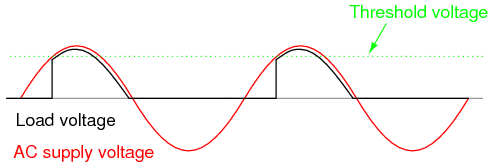
Thyratron waveforms
As the AC supply voltage climbs from zero volts to its first peak, the load voltage remains at zero (no load current) until the threshold voltage is reached. At that point, the tube switches "on" and begins to conduct, the load voltage now following the AC voltage through the rest of the half cycle. Load voltage exists (and thus load current) even when the AC voltage waveform has dropped below the threshold value of the tube. This is hysteresis at work: the tube stays in its conductive mode past the point where it first turned on, continuing to conduct until there the supply voltage drops off to almost zero volts. Because thyratron tubes are one-way (diode) devices, no voltage develops across the load through the negative half-cycle of AC. In practical thyratron circuits, multiple tubes arranged in some form of full-wave rectifier circuit to facilitate full-wave DC power to the load.
The thyratron tube has been applied to a relaxation oscillator circuit. [VTS] The frequency is controlled by a small DC voltage between grid and cathode. (See Figure below) This voltage-controlled oscillator is known as a VCO. Relaxation oscillators produce a very non-sinusoidal output, and they exist mostly as demonstration circuits (as is the case here) or in applications where the harmonic rich waveform is desirable. [MET]
Voltage controlled thyratron relaxation oscillator
I speak of thyratron tubes in the past tense for good reason: modern semiconductor components have obsoleted thyratron tube technology for all but a few very special applications. It is no coincidence that the word thyristor bears so much similarity to the word thyratron, for this class of semiconductor components does much the same thing: use hysteretically switch current on and off. It is these modern devices that we now turn our attention to.
Our exploration of thyristors begins with a device called the four-layer diode, also known as a PNPN diode, or a Shockley diode after its inventor, William Shockley. This is not to be confused with a Schottky diode, that two-layer metal-semiconductor device known for its high switching speed. A crude illustration of the Shockley diode, often seen in textbooks, is a four-layer sandwich of P-N-P-N semiconductor material, Figure below.
Shockley or 4-layer diode
Unfortunately, this simple illustration does nothing to enlighten the viewer on how it works or why. Consider an alternative rendering of the device's construction in Figure below.

Transistor equivalent of Shockley diode
Shown like this, it appears to be a set of interconnected bipolar transistors, one PNP and the other NPN. Drawn using standard schematic symbols, and respecting the layer doping concentrations not shown in the last image, the Shockley diode looks like this (Figure below)
Shockley diode: physical diagram, equivalent schematic diagram, and schematic symbol.
Let's connect one of these devices to a source of variable voltage and see what happens: (Figure below)

Powered Shockley diode equivalent circuit.
With no voltage applied, of course there will be no current. As voltage is initially increased, there will still be no current because neither transistor is able to turn on: both will be in cutoff mode. To understand why this is, consider what it takes to turn a bipolar junction transistor on: current through the base-emitter junction. As you can see in the diagram, base current through the lower transistor is controlled by the upper transistor, and the base current through the upper transistor is controlled by the lower transistor. In other words, neither transistor can turn on until the other transistor turns on. What we have here, in vernacular terms, is known as a Catch-22.
So how can a Shockley diode ever conduct current, if its constituent transistors stubbornly maintain themselves in a state of cutoff? The answer lies in the behavior of real transistors as opposed to ideal transistors. An ideal bipolar transistor will never conduct collector current if no base current flows, no matter how much or little voltage we apply between collector and emitter. Real transistors, on the other hand, have definite limits to how much collector-emitter voltage each can withstand before one breaks down and conduct. If two real transistors are connected in this fashion to form a Shockley diode, each one will conduct if sufficient voltage is applied by the battery between anode and cathode to cause one of them to break down. Once one transistor breaks down and begins to conduct, it will allow base current through the other transistor, causing it to turn on in a normal fashion, which then allows base current through the first transistor. The end result is that both transistors will be saturated, now keeping each other turned on instead of off.
So, we can force a Shockley diode to turn on by applying sufficient voltage between anode and cathode. As we have seen, this will inevitably cause one of the transistors to turn on, which then turns the other transistor on, ultimately "latching" both transistors on where each will tend to remain. But how do we now get the two transistors to turn off again? Even if the applied voltage is reduced to a point well below what it took to get the Shockley diode conducting, it will remain conducting because both transistors now have base current to maintain regular, controlled conduction. The answer to this is to reduce the applied voltage to a much lower point where too little current flows to maintain transistor bias, at which point one of the transistors will cutoff, which then halts base current through the other transistor, sealing both transistors in the "off" state as each one was before any voltage was applied at all.
If we graph this sequence of events and plot the results on an I/V graph, the hysteresis is evident. First, we will observe the circuit as the DC voltage source (battery) is set to zero voltage: (Figure below)

Zero applied voltage; zero current
Next, we will steadily increase the DC voltage. Current through the circuit is at or nearly at zero, as the breakdown limit has not been reached for either transistor: (Figure below)

Some applied voltage; still no current
When the voltage breakdown limit of one transistor is reached, it will begin to conduct collector current even though no base current has gone through it yet. Normally, this sort of treatment would destroy a bipolar junction transistor, but the PNP junctions comprising a Shockley diode are engineered to take this kind of abuse, similar to the way a Zener diode is built to handle reverse breakdown without sustaining damage. For the sake of illustration I'll assume the lower transistor breaks down first, sending current through the base of the upper transistor: (Figure below)

More voltage applied; lower transistor breaks down
As the upper transistor receives base current, it turns on as expected. This action allows the lower transistor to conduct normally, the two transistors "sealing" themselves in the "on" state. Full current is quickly seen in the circuit: (Figure below)
Transistors are now fully conducting.
The positive feedback mentioned earlier in this chapter is clearly evident here. When one transistor breaks down, it allows current through the device structure. This current may be viewed as the "output" signal of the device. Once an output current is established, it works to hold both transistors in saturation, thus ensuring the continuation of a substantial output current. In other words, an output current "feeds back" positively to the input (transistor base current) to keep both transistors in the "on" state, thus reinforcing (or regenerating) itself.
With both transistors maintained in a state of saturation with the presence of ample base current, each will continue to conduct even if the applied voltage is greatly reduced from the breakdown level. The effect of positive feedback is to keep both transistors in a state of saturation despite the loss of input stimulus (the original, high voltage needed to break down one transistor and cause a base current through the other transistor): (Figure below)

Current maintained even when voltage is reduced
If the DC voltage source is turned down too far, though, the circuit will eventually reach a point where there isn't enough current to sustain both transistors in saturation. As one transistor passes less and less collector current, it reduces the base current for the other transistor, thus reducing base current for the first transistor. The vicious cycle continues rapidly until both transistors fall into cutoff: (Figure below)
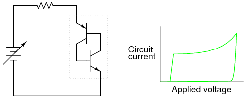
If voltage drops too low, both transistors shut off.
Here, positive feedback is again at work: the fact that the cause/effect cycle between both transistors is "vicious" (a decrease in current through one works to decrease current through the other, further decreasing current through the first transistor) indicates a positive relationship between output (controlled current) and input (controlling current through the transistors' bases).
The resulting curve on the graph is classically hysteretic: as the input signal (voltage) is increased and decreased, the output (current) does not follow the same path going down as it did going up: (Figure below)
Hysteretic curve
Put in simple terms, the Shockley diode tends to stay on once its turned on, and stay off once its turned off. No "in-between" or "active" mode in its operation: it is a purely on or off device, as are all thyristors.
A few special terms apply to Shockley diodes and all other thyristor devices built upon the Shockley diode foundation. First is the term used to describe its "on" state: latched. The word "latch" is reminiscent of a door lock mechanism, which tends to keep the door closed once it has been pushed shut. The term firing refers to the initiation of a latched state. To get a Shockley diode to latch, the applied voltage must be increased until breakover is attained. Though this action is best described as transistor breakdown, the term breakover is used instead because the result is a pair of transistors in mutual saturation rather than destruction of the transistor. A latched Shockley diode is re-set back into its nonconducting state by reducing current through it until low-current dropout occurs.
Note that Shockley diodes may be fired in a way other than breakover: excessive voltage rise, or dv/dt. If the applied voltage across the diode increases at a high rate of change, it may trigger. This is able to cause latching (turning on) of the diode due to inherent junction capacitances within the transistors. Capacitors, as you may recall, oppose changes in voltage by drawing or supplying current. If the applied voltage across a Shockley diode rises at too fast a rate, those tiny capacitances will draw enough current during that time to activate the transistor pair, turning them both on. Usually, this form of latching is undesirable, and can be minimized by filtering high-frequency (fast voltage rises) from the diode with series inductors and parallel resistor-capacitor networks called snubbers: (Figure below)

Both the series inductor and parallel resistor-capacitor “snubber” circuit help minimize the Shockley diode's exposure to excessively rising voltage.
The voltage rise limit of a Shockley diode is referred to as the critical rate of voltage rise. Manufacturers usually provide this specification for the devices they sell.
Like all diodes, Shockley diodes are unidirectional devices; that is, these only conduct current in one direction. If bidirectional (AC) operation is desired, two Shockley diodes may be joined in parallel facing different directions to form a new kind of thyristor, the DIAC: (Figure below)
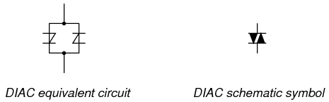
The DIAC
A DIAC operated with a DC voltage across it behaves exactly the same as a Shockley diode. With AC, however, the behavior is different from what one might expect. Because alternating current repeatedly reverses direction, DIACs will not stay latched longer than one-half cycle. If a DIAC becomes latched, it will continue to conduct current only as long as voltage is available to push enough current in that direction. When the AC polarity reverses, as it must twice per cycle, the DIAC will drop out due to insufficient current, necessitating another breakover before it conducts again. The result is the current waveform in Figure below.

DIAC waveforms
DIACs are almost never used alone, but in conjunction with other thyristor devices.
Shockley diodes are curious devices, but rather limited in application. Their usefulness may be expanded, however, by equipping them with another means of latching. In doing so, each becomes true amplifying devices (if only in an on/off mode), and we refer to these as silicon-controlled rectifiers, or SCRs.
The progression from Shockley diode to SCR is achieved with one small addition, actually nothing more than a third wire connection to the existing PNPN structure: (Figure below)
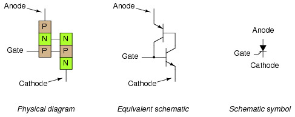
The Silicon-Controlled Rectifier (SCR)
If an SCR's gate is left floating (disconnected), it behaves exactly as a Shockley diode. It may be latched by breakover voltage or by exceeding the critical rate of voltage rise between anode and cathode, just as with the Shockley diode. Dropout is accomplished by reducing current until one or both internal transistors fall into cutoff mode, also like the Shockley diode. However, because the gate terminal connects directly to the base of the lower transistor, it may be used as an alternative means to latch the SCR. By applying a small voltage between gate and cathode, the lower transistor will be forced on by the resulting base current, which will cause the upper transistor to conduct, which then supplies the lower transistor's base with current so that it no longer needs to be activated by a gate voltage. The necessary gate current to initiate latch-up, of course, will be much lower than the current through the SCR from cathode to anode, so the SCR does achieve a measure of amplification.
This method of securing SCR conduction is called triggering, and it is by far the most common way that SCRs are latched in actual practice. In fact, SCRs are usually chosen so that their breakover voltage is far beyond the greatest voltage expected to be experienced from the power source, so that it can be turned on only by an intentional voltage pulse applied to the gate.
It should be mentioned that SCRs may sometimes be turned off by directly shorting their gate and cathode terminals together, or by "reverse-triggering" the gate with a negative voltage (in reference to the cathode), so that the lower transistor is forced into cutoff. I say this is "sometimes" possible because it involves shunting all of the upper transistor's collector current past the lower transistor's base. This current may be substantial, making triggered shut-off of an SCR difficult at best. A variation of the SCR, called a Gate-Turn-Off thyristor, or GTO, makes this task easier. But even with a GTO, the gate current required to turn it off may be as much as 20% of the anode (load) current! The schematic symbol for a GTO is shown in the following illustration: (Figure below)
The Gate Turn-Off thyristor (GTO)
SCRs and GTOs share the same equivalent schematics (two transistors connected in a positive-feedback fashion), the only differences being details of construction designed to grant the NPN transistor a greater β than the PNP. This allows a smaller gate current (forward or reverse) to exert a greater degree of control over conduction from cathode to anode, with the PNP transistor's latched state being more dependent upon the NPN's than vice versa. The Gate-Turn-Off thyristor is also known by the name of Gate-Controlled Switch, or GCS.
A rudimentary test of SCR function, or at least terminal identification, may be performed with an ohmmeter. Because the internal connection between gate and cathode is a single PN junction, a meter should indicate continuity between these terminals with the red test lead on the gate and the black test lead on the cathode like this: (Figure below)
Rudimentary test of SCR
All other continuity measurements performed on an SCR will show "open" ("OL" on some digital multimeter displays). It must be understood that this test is very crude and does not constitute a comprehensive assessment of the SCR. It is possible for an SCR to give good ohmmeter indications and still be defective. Ultimately, the only way to test an SCR is to subject it to a load current.
If you are using a multimeter with a "diode check" function, the gate-to-cathode junction voltage indication you get may or may not correspond to what's expected of a silicon PN junction (approximately 0.7 volts). In some cases, you will read a much lower junction voltage: mere hundredths of a volt. This is due to an internal resistor connected between the gate and cathode incorporated within some SCRs. This resistor is added to make the SCR less susceptible to false triggering by spurious voltage spikes, from circuit "noise" or from static electric discharge. In other words, having a resistor connected across the gate-cathode junction requires that a strong triggering signal (substantial current) be applied to latch the SCR. This feature is often found in larger SCRs, not on small SCRs. Bear in mind that an SCR with an internal resistor connected between gate and cathode will indicate continuity in both directions between those two terminals: (Figure below)
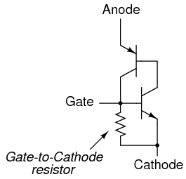
Larger SCRs have gate to cathode resistor.
"Normal" SCRs, lacking this internal resistor, are sometimes referred to as sensitive gate SCRs due to their ability to be triggered by the slightest positive gate signal.
The test circuit for an SCR is both practical as a diagnostic tool for checking suspected SCRs and also an excellent aid to understanding basic SCR operation. A DC voltage source is used for powering the circuit, and two pushbutton switches are used to latch and unlatch the SCR, respectively: (Figure below)
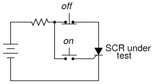
SCR testing circuit
Actuating the normally-open "on" pushbutton switch connects the gate to the anode, allowing current from the negative terminal of the battery, through the cathode-gate PN junction, through the switch, through the load resistor, and back to the battery. This gate current should force the SCR to latch on, allowing current to go directly from cathode to anode without further triggering through the gate. When the "on" pushbutton is released, the load should remain energized.
Pushing the normally-closed "off" pushbutton switch breaks the circuit, forcing current through the SCR to halt, thus forcing it to turn off (low-current dropout).
If the SCR fails to latch, the problem may be with the load and not the SCR. A certain minimum amount of load current is required to hold the SCR latched in the "on" state. This minimum current level is called the holding current. A load with too great a resistance value may not draw enough current to keep an SCR latched when gate current ceases, thus giving the false impression of a bad (unlatchable) SCR in the test circuit. Holding current values for different SCRs should be available from the manufacturers. Typical holding current values range from 1 milliamp to 50 milliamps or more for larger units.
For the test to be fully comprehensive, more than the triggering action needs to be tested. The forward breakover voltage limit of the SCR could be tested by increasing the DC voltage supply (with no pushbuttons actuated) until the SCR latches all on its own. Beware that a breakover test may require very high voltage: many power SCRs have breakover voltage ratings of 600 volts or more! Also, if a pulse voltage generator is available, the critical rate of voltage rise for the SCR could be tested in the same way: subject it to pulsing supply voltages of different V/time rates with no pushbutton switches actuated and see when it latches.
In this simple form, the SCR test circuit could suffice as a start/stop control circuit for a DC motor, lamp, or other practical load: (Figure below)

DC motor start/stop control circuit
Another practical use for the SCR in a DC circuit is as a crowbar device for overvoltage protection. A "crowbar" circuit consists of an SCR placed in parallel with the output of a DC power supply, for placing a direct short-circuit on the output of that supply to prevent excessive voltage from reaching the load. Damage to the SCR and power supply is prevented by the judicious placement of a fuse or substantial series resistance ahead of the SCR to limit short-circuit current: (Figure below)
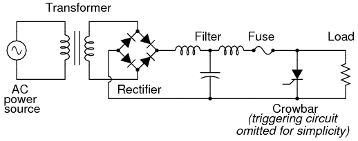
Crowbar circuit used in DC power supply
Some device or circuit sensing the output voltage will be connected to the gate of the SCR, so that when an overvoltage condition occurs, voltage will be applied between the gate and cathode, triggering the SCR and forcing the fuse to blow. The effect will be approximately the same as dropping a solid steel crowbar directly across the output terminals of the power supply, hence the name of the circuit.
Most applications of the SCR are for AC power control, despite the fact that SCRs are inherently DC (unidirectional) devices. If bidirectional circuit current is required, multiple SCRs may be used, with one or more facing each direction to handle current through both half-cycles of the AC wave. The primary reason SCRs are used at all for AC power control applications is the unique response of a thyristor to an alternating current. As we saw, the thyratron tube (the electron tube version of the SCR) and the DIAC, a hysteretic device triggered on during a portion of an AC half-cycle will latch and remain on throughout the remainder of the half-cycle until the AC current decreases to zero, as it must to begin the next half-cycle. Just prior to the zero-crossover point of the current waveform, the thyristor will turn off due to insufficient current (this behavior is also known as natural commutation) and must be fired again during the next cycle. The result is a circuit current equivalent to a "chopped up" sine wave. For review, here is the graph of a DIAC's response to an AC voltage whose peak exceeds the breakover voltage of the DIAC: (Figure below)
DIAC bidirectional response
With the DIAC, that breakover voltage limit was a fixed quantity. With the SCR, we have control over exactly when the device becomes latched by triggering the gate at any point in time along the waveform. By connecting a suitable control circuit to the gate of an SCR, we can "chop" the sine wave at any point to allow for time-proportioned power control to a load.
Take the circuit in Figure below as an example. Here, an SCR is positioned in a circuit to control power to a load from an AC source.

SCR control of AC power
Being a unidirectional (one-way) device, at most we can only deliver half-wave power to the load, in the half-cycle of AC where the supply voltage polarity is positive on the top and negative on the bottom. However, for demonstrating the basic concept of time-proportional control, this simple circuit is better than one controlling full-wave power (which would require two SCRs).
With no triggering to the gate, and the AC source voltage well below the SCR's breakover voltage rating, the SCR will never turn on. Connecting the SCR gate to the anode through a standard rectifying diode (to prevent reverse current through the gate in the event of the SCR containing a built-in gate-cathode resistor), will allow the SCR to be triggered almost immediately at the beginning of every positive half-cycle: (Figure below)
Gate connected directly to anode through a diode; nearly complete half-wave current through load.
We can delay the triggering of the SCR, however, by inserting some resistance into the gate circuit, thus increasing the amount of voltage drop required before enough gate current triggers the SCR. In other words, if we make it harder for electrons to flow through the gate by adding a resistance, the AC voltage will have to reach a higher point in its cycle before there will be enough gate current to turn the SCR on. The result is in Figure below.

Resistance inserted in gate circuit; less than half-wave current through load.
With the half-sine wave chopped up to a greater degree by delayed triggering of the SCR, the load receives less average power (power is delivered for less time throughout a cycle). By making the series gate resistor variable, we can make adjustments to the time-proportioned power: (Figure below)

Increasing the resistance raises the threshold level, causing less power to be delivered to the load. Decreasing the resistance lowers the threshold level, causing more power to be delivered to the load.
Unfortunately, this control scheme has a significant limitation. In using the AC source waveform for our SCR triggering signal, we limit control to the first half of the waveform's half-cycle. In other words, it is not possible for us to wait until after the wave's peak to trigger the SCR. This means we can turn down the power only to the point where the SCR turns on at the very peak of the wave: (Figure below)

Circuit at minimum power setting
Raising the trigger threshold any more will cause the circuit to not trigger at all, since not even the peak of the AC power voltage will be enough to trigger the SCR. The result will be no power to the load.
An ingenious solution to this control dilemma is found in the addition of a phase-shifting capacitor to the circuit: (Figure below)

Addition of a phase-shifting capacitor to the circuit
The smaller waveform shown on the graph is voltage across the capacitor. For the sake of illustrating the phase shift, I'm assuming a condition of maximum control resistance where the SCR is not triggering at all with no load current, save for what little current goes through the control resistor and capacitor. This capacitor voltage will be phase-shifted anywhere from 0o to 90o lagging behind the power source AC waveform. When this phase-shifted voltage reaches a high enough level, the SCR will trigger.
With enough voltage across the capacitor to periodically trigger the SCR, the resulting load current waveform will look something like Figure below)

Phase-shifted signal triggers SCR into conduction.
Because the capacitor waveform is still rising after the main AC power waveform has reached its peak, it becomes possible to trigger the SCR at a threshold level beyond that peak, thus chopping the load current wave further than it was possible with the simpler circuit. In reality, the capacitor voltage waveform is a bit more complex that what is shown here, its sinusoidal shape distorted every time the SCR latches on. However, what I'm trying to illustrate here is the delayed triggering action gained with the phase-shifting RC network; thus, a simplified, undistorted waveform serves the purpose well.
SCRs may also be triggered, or "fired," by more complex circuits. While the circuit previously shown is sufficient for a simple application like a lamp control, large industrial motor controls often rely on more sophisticated triggering methods. Sometimes, pulse transformers are used to couple a triggering circuit to the gate and cathode of an SCR to provide electrical isolation between the triggering and power circuits: (Figure below)
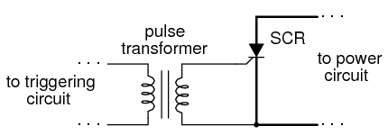
Transformer coupling of trigger signal provides isolation.
When multiple SCRs are used to control power, their cathodes are often not electrically common, making it difficult to connect a single triggering circuit to all SCRs equally. An example of this is the controlled bridge rectifier shown in Figure below.
Controlled bridge rectifier
In any bridge rectifier circuit, the rectifying diodes (in this example, the rectifying SCRs) must conduct in opposite pairs. SCR1 and SCR3 must be fired simultaneously, and SCR2 and SCR4 must be fired together as a pair. As you will notice, though, these pairs of SCRs do not share the same cathode connections, meaning that it would not work to simply parallel their respective gate connections and connect a single voltage source to trigger both: (Figure below)
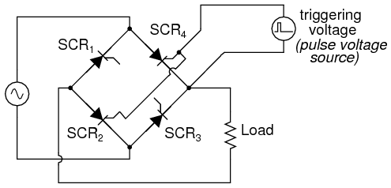
This strategy will not work for triggering SCR2 and SCR4 as a pair.
Although the triggering voltage source shown will trigger SCR4, it will not trigger SCR2 properly because the two thyristors do not share a common cathode connection to reference that triggering voltage. Pulse transformers connecting the two thyristor gates to a common triggering voltage source will work, however: (Figure below)

Transformer coupling of the gates allows triggering of SCR2 and SCR4 .
Bear in mind that this circuit only shows the gate connections for two out of the four SCRs. Pulse transformers and triggering sources for SCR1 and SCR3, as well as the details of the pulse sources themselves, have been omitted for the sake of simplicity.
Controlled bridge rectifiers are not limited to single-phase designs. In most industrial control systems, AC power is available in three-phase form for maximum efficiency, and solid-state control circuits are built to take advantage of that. A three-phase controlled rectifier circuit built with SCRs, without pulse transformers or triggering circuitry shown, would look like Figure below.

Three-phase bridge SCR control of load
SCRs are unidirectional (one-way) current devices, making them useful for controlling DC only. If two SCRs are joined in back-to-back parallel fashion just like two Shockley diodes were joined together to form a DIAC, we have a new device known as the TRIAC: (Figure below)
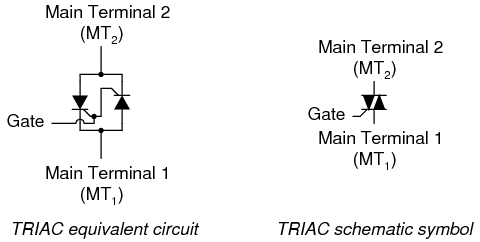
The TRIAC SCR equivalent and, TRIAC schematic symbol
Because individual SCRs are more flexible to use in advanced control systems, these are more commonly seen in circuits like motor drives; TRIACs are usually seen in simple, low-power applications like household dimmer switches. A simple lamp dimmer circuit is shown in Figure below, complete with the phase-shifting resistor-capacitor network necessary for after-peak firing.

TRIAC phase-control of power
TRIACs are notorious for not firing symmetrically. This means these usually won't trigger at the exact same gate voltage level for one polarity as for the other. Generally speaking, this is undesirable, because unsymmetrical firing results in a current waveform with a greater variety of harmonic frequencies. Waveforms that are symmetrical above and below their average centerlines are comprised of only odd-numbered harmonics. Unsymmetrical waveforms, on the other hand, contain even-numbered harmonics (which may or may not be accompanied by odd-numbered harmonics as well).
In the interest of reducing total harmonic content in power systems, the fewer and less diverse the harmonics, the better -- one more reason individual SCRs are favored over TRIACs for complex, high-power control circuits. One way to make the TRIAC's current waveform more symmetrical is to use a device external to the TRIAC to time the triggering pulse. A DIAC placed in series with the gate does a fair job of this: (Figure below)
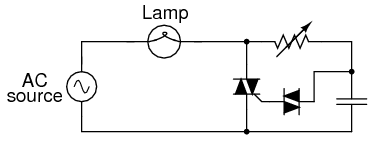
DIAC improves symmetry of control
DIAC breakover voltages tend to be much more symmetrical (the same in one polarity as the other) than TRIAC triggering voltage thresholds. Since the DIAC prevents any gate current until the triggering voltage has reached a certain, repeatable level in either direction, the firing point of the TRIAC from one half-cycle to the next tends to be more consistent, and the waveform more symmetrical above and below its centerline.
Practically all the characteristics and ratings of SCRs apply equally to TRIACs, except that TRIACs of course are bidirectional (can handle current in both directions). Not much more needs to be said about this device except for an important caveat concerning its terminal designations.
From the equivalent circuit diagram shown earlier, one might think that main terminals 1 and 2 were interchangeable. These are not! Although it is helpful to imagine the TRIAC as being composed of two SCRs joined together, it in fact is constructed from a single piece of semiconducting material, appropriately doped and layered. The actual operating characteristics may differ slightly from that of the equivalent model.
This is made most evident by contrasting two simple circuit designs, one that works and one that doesn't. The following two circuits are a variation of the lamp dimmer circuit shown earlier, the phase-shifting capacitor and DIAC removed for simplicity's sake. Although the resulting circuit lacks the fine control ability of the more complex version (with capacitor and DIAC), it does function: (Figure below)
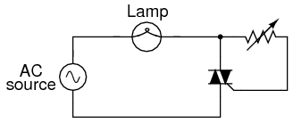
This circuit with the gate to MT2 does function.
Suppose we were to swap the two main terminals of the TRIAC around. According to the equivalent circuit diagram shown earlier in this section, the swap should make no difference. The circuit ought to work: (Figure below)
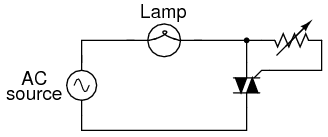
With the gate swapped to MT1, this circuit does not function.
However, if this circuit is built, it will be found that it does not work! The load will receive no power, the TRIAC refusing to fire at all, no matter how low or high a resistance value the control resistor is set to. The key to successfully triggering a TRIAC is to make sure the gate receives its triggering current from the main terminal 2 side of the circuit (the main terminal on the opposite side of the TRIAC symbol from the gate terminal). Identification of the MT1 and MT2 terminals must be done via the TRIAC's part number with reference to a data sheet or book.
Like bipolar transistors, SCRs and TRIACs are also manufactured as light-sensitive devices, the action of impinging light replacing the function of triggering voltage.
Optically-controlled SCRs are often known by the acronym LASCR, or Light Activated SCR. Its symbol, not surprisingly, looks like Figure below.

Light activated SCR
Optically-controlled TRIACs don't receive the honor of having their own acronym, but instead are humbly known as opto-TRIACs. Their schematic symbol is shown in Figure below.

Opto-TRIAC
Optothyristors (a general term for either the LASCR or the opto-TRIAC) are commonly found inside sealed "optoisolator" modules.
Unijunction transistor: Although a unijunction transistor is not a thyristor, this device can trigger larger thyristors with a pulse at base B1. A unijunction transistor is composed of a bar of N-type silicon having a P-type connection in the middle. See Figure below(a). The connections at the ends of the bar are known as bases B1 and B2; the P-type mid-point is the emitter. With the emitter disconnected, the total resistance RBBO, a datasheet item, is the sum of RB1 and RB2 as shown in Figure below(b). RBBO ranges from 4-12kΩ for different device types. The intrinsic standoff ratio η is the ratio of RB1 to RBBO. It varies from 0.4 to 0.8 for different devices. The schematic symbol is Figure below(c)
Unijunction transistor: (a) Construction, (b) Model, (c) Symbol
The Unijunction emitter current vs voltage characteristic curve (Figure below(a) ) shows that as VE increases, current IE increases up IP at the peak point. Beyond the peak point, current increases as voltage decreases in the negative resistance region. The voltage reaches a minimum at the valley point. The resistance of RB1, the saturation resistance is lowest at the valley point.
IP and IV, are datasheet parameters; For a 2n2647, IP and IV are 2µA and 4mA, respectively. [AMS] VP is the voltage drop across RB1 plus a 0.7V diode drop; see Figure below(b). VV is estimated to be approximately 10% of VBB.

Unijunction transistor: (a) emitter characteristic curve, (b) model for VP .
The relaxation oscillator in Figure below is an application of the unijunction oscillator. RE charges CE until the peak point. The unijunction emitter terminal has no effect on the capacitor until this point is reached. Once the capacitor voltage, VE, reaches the peak voltage point VP, the lowered emitter-base1 E-B1 resistance quickly discharges the capacitor. Once the capacitor discharges below the valley point VV, the E-RB1 resistance reverts back to high resistance, and the capacitor is free to charge again.
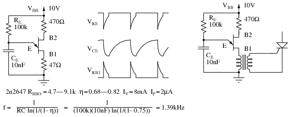
Unijunction transistor relaxation oscillator and waveforms. Oscillator drives SCR.
During capacitor discharge through the E-B1 saturation resistance, a pulse may be seen on the external B1 and B2 load resistors, Figure above. The load resistor at B1 needs to be low to not affect the discharge time. The external resistor at B2 is optional. It may be replaced by a short circuit. The approximate frequency is given by 1/f = T = RC. A more accurate expression for frequency is given in Figure above.
The charging resistor RE must fall within certain limits. It must be small enough to allow IP to flow based on the VBB supply less VP. It must be large enough to supply IV based on the VBB supply less VV. [MHW] The equations and an example for a 2n2647:

Programmable Unijunction Transistor (PUT): Although the unijunction transistor is listed as obsolete (read expensive if obtainable), the programmable unijunction transistor is alive and well. It is inexpensive and in production. Though it serves a function similar to the unijunction transistor, the PUT is a three terminal thyristor. The PUT shares the four-layer structure typical of thyristors shown in Figure below. Note that the gate, an N-type layer near the anode, is known as an “anode gate”. Moreover, the gate lead on the schematic symbol is attached to the anode end of the symbol.
Programmable unijunction transistor: Characteristic curve, internal construction, schematic symbol.
The characteristic curve for the programmable unijunction transistor in Figure above is similar to that of the unijunction transistor. This is a plot of anode current IA versus anode voltage VA. The gate lead voltage sets, programs, the peak anode voltage VP. As anode current inceases, voltage increases up to the peak point. Thereafter, increasing current results in decreasing voltage, down to the valley point.
The PUT equivalent of the unijunction transistor is shown in Figure below. External PUT resistors R1 and R2 replace unijunction transistor internal resistors RB1 and RB2, respectively. These resistors allow the calculation of the intrinsic standoff ratio η.

PUT equivalent of unijunction transistor
Figure below shows the PUT version of the unijunction relaxation oscillator Figure previous. Resistor R charges the capacitor until the peak point, Figure previous, then heavy conduction moves the operating point down the negative resistance slope to the valley point. A current spike flows through the cathode during capacitor discharge, developing a voltage spike across the cathode resistors. After capacitor discharge, the operating point resets back to the slope up to the peak point.
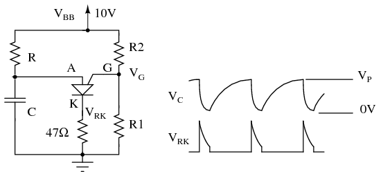
PUT relaxation oscillator
Problem: What is the range of suitable values for R in Figure above, a relaxation oscillator? The charging resistor must be small enough to supply enough current to raise the anode to VP the peak point (Figure previous) while charging the capacitor. Once VP is reached, anode voltage decreases as current increases (negative resistance), which moves the operating point to the valley. It is the job of the capacitor to supply the valley current IV. Once it is discharged, the operating point resets back to the upward slope to the peak point. The resistor must be large enough so that it will never supply the high valley current IP. If the charging resistor ever could supply that much current, the resistor would supply the valley current after the capacitor was discharged and the operating point would never reset back to the high resistance condition to the left of the peak point.
We select the same VBB=10V used for the unijunction transistor example. We select values of R1 and R2 so that η is about 2/3. We calculate η and VS. The parallel equivalent of R1, R2 is RG, which is only used to make selections from Table below. Along with VS=10, the closest value to our 6.3, we find VT=0.6V, in Table below and calculate VP.
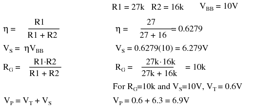
We also find IP and IV, the peak and valley currents, respectively in Table below. We still need VV, the valley voltage. We used 10% of VBB= 1V, in the previous unijunction example. Consulting the datasheet, we find the forward voltage VF=0.8V at IF=50mA. The valley current IV=70µA is much less than IF=50mA. Therefore, VV must be less than VF=0.8V. How much less? To be safe we set VV=0V. This will raise the lower limit on the resistor range a little.
Choosing R > 143k guarantees that the operating point can reset from the valley point after capacitor discharge. R < 755k allows charging up to VP at the peak point.
Selected 2n6027 PUT parameters, adapted from 2n6027 datasheet. [ON1]
| Parameter | Conditions | min | typical | max | units |
|---|---|---|---|---|---|
| VT | V | ||||
| VS=10V, RG=1Meg | 0.2 | 0.7 | 1.6 | ||
| VS=10V, RG=10k | 0.2 | 0.35 | 0.6 | ||
| IP | µA | ||||
| VS=10V, RG=1Meg | - | 1.25 | 2.0 | ||
| VS=10V, RG=10k | - | 4.0 | 5.0 | ||
| IV | µA | ||||
| VS=10V, RG=1Meg | - | 18 | 50 | ||
| VS=10V, RG=10k | 70 | 150 | - | ||
| VS=10V, RG=200Ω | 1500 | - | - | ||
| VF | IF=50mA | - | 0.8 | 1.5 | V |
Figure below show the PUT relaxation oscillator with the final resistor values. A practical application of a PUT triggering an SCR is also shown. This circuit needs a VBB unfiltered supply (not shown) divided down from the bridge rectifier to reset the relaxation oscillator after each power zero crossing. The variable resistor should have a minimum resistor in series with it to prevent a low pot setting from hanging at the valley point.
PUT relaxation oscillator with component values. PUT drives SCR lamp dimmer.
PUT timing circuits are said to be usable to 10kHz. If a linear ramp is required instead of an exponential ramp, replace the charging resistor with a constant current source such as a FET based constant current diode. A substitute PUT may be built from a PNP and NPN silicon transistor as shown for the SCS equivalent circuit in Figure below by omitting the cathode gate and using the anode gate.
If we take the equivalent circuit for an SCR and add another external terminal, connected to the base of the top transistor and the collector of the bottom transistor, we have a device known as a silicon-controlled-switch, or SCS: (Figure below)

The Silicon-Controlled Switch(SCS)
This extra terminal allows more control to be exerted over the device, particularly in the mode of forced commutation, where an external signal forces it to turn off while the main current through the device has not yet fallen below the holding current value. Note that the motor is in the anode gate circuit in Figure below. This is correct, although it doesn't look right. The anode lead is required to switch the SCS off. Therefore the motor cannot be in series with the anode.
SCS: Motor start/stop circuit, equivalent circuit with two transistors.
When the "on" pushbutton switch is actuated, the voltage applied between the cathode gate and the cathode, forward-biases the lower transistor's base-emitter junction, and turning it on. The top transistor of the SCS is ready to conduct, having been supplied with a current path from its emitter terminal (the SCS's anode terminal) through resistor R2 to the positive side of the power supply. As in the case of the SCR, both transistors turn on and maintain each other in the "on" mode. When the lower transistor turns on, it conducts the motor's load current, and the motor starts and runs.
The motor may be stopped by interrupting the power supply, as with an SCR, and this is called natural commutation. However, the SCS provides us with another means of turning off: forced commutation by shorting the anode terminal to the cathode. [GE1] If this is done (by actuating the "off" pushbutton switch), the upper transistor within the SCS will lose its emitter current, thus halting current through the base of the lower transistor. When the lower transistor turns off, it breaks the circuit for base current through the top transistor (securing its "off" state), and the motor (making it stop). The SCS will remain in the off condition until such time that the "on" pushbutton switch is re-actuated.
Two relatively recent technologies designed to reduce the "driving" (gate trigger current) requirements of classic thyristor devices are the MOS-gated thyristor and the MOS Controlled Thyristor, or MCT.
The MOS-gated thyristor uses a MOSFET to initiate conduction through the upper (PNP) transistor of a standard thyristor structure, thus triggering the device. Since a MOSFET requires negligible current to "drive" (cause it to saturate), this makes the thyristor as a whole very easy to trigger: (Figure below)
MOS-gated thyristor equivalent circuit
Given the fact that ordinary SCRs are quite easy to "drive" as it is, the practical advantage of using an even more sensitive device (a MOSFET) to initiate triggering is debatable. Also, placing a MOSFET at the gate input of the thyristor now makes it impossible to turn it off by a reverse-triggering signal. Only low-current dropout can make this device stop conducting after it has been latched.
A device of arguably greater value would be a fully-controllable thyristor, whereby a small gate signal could both trigger the thyristor and force it to turn off. Such a device does exist, and it is called the MOS Controlled Thyristor, or MCT. It uses a pair of MOSFETs connected to a common gate terminal, one to trigger the thyristor and the other to "untrigger" it: (Figure below)
MOS-controlled thyristor (MCT) equivalent circuit
A positive gate voltage (with respect to the cathode) turns on the upper (N-channel) MOSFET, allowing base current through the upper (PNP) transistor, which latches the transistor pair in an "on" state. Once both transistors are fully latched, there will be little voltage dropped between anode and cathode, and the thyristor will remain latched as long as the controlled current exceeds the minimum (holding) current value. However, if a negative gate voltage is applied (with respect to the anode, which is at nearly the same voltage as the cathode in the latched state), the lower MOSFET will turn on and "short" between the lower (NPN) transistor's base and emitter terminals, thus forcing it into cutoff. Once the NPN transistor cuts off, the PNP transistor will drop out of conduction, and the whole thyristor turns off. Gate voltage has full control over conduction through the MCT: to turn it on and to turn it off.
This device is still a thyristor, though. If zero voltage is applied between gate and cathode, neither MOSFET will turn on. Consequently, the bipolar transistor pair will remain in whatever state it was last in (hysteresis). So, a brief positive pulse to the gate turns the MCT on, a brief negative pulse forces it off, and no applied gate voltage lets it remain in whatever state it is already in. In essence, the MCT is a latching version of the IGBT (Insulated Gate Bipolar Transistor).
Lessons In Electric Circuits copyright (C) 2000-2023 Tony R. Kuphaldt, under the terms and conditions of the CC BY License.
{kind=link}
{kind=link}
{kind=link}
{kind=link}
{kind=link}
{kind=link}
{kind=link}
{kind=link}
{kind=link}
{kind=link}
{kind=link}
{kind=link}
{kind=link}
{kind=link}
{kind=link}
{kind=link}
{kind=link}
{kind=link}
{kind=link}
{kind=link}
{kind=link}
{kind=link}
{kind=link}
{kind=link}
{kind=link}
{kind=link}
{kind=link}
{kind=link}
{kind=link}
{kind=link}
{kind=link}
{kind=link}
{kind=link}
{kind=link}
{kind=link}
{kind=link}
{kind=link}
{kind=link}
{kind=link}
{kind=link}
{kind=link}
{kind=link}
{kind=link}
{kind=link}
{kind=link}
{kind=link}
{kind=link}
{kind=link}
{kind=link}
{kind=link}
{kind=link}
{kind=link}
{kind=link}
{kind=link}
{kind=link}
{kind=link}